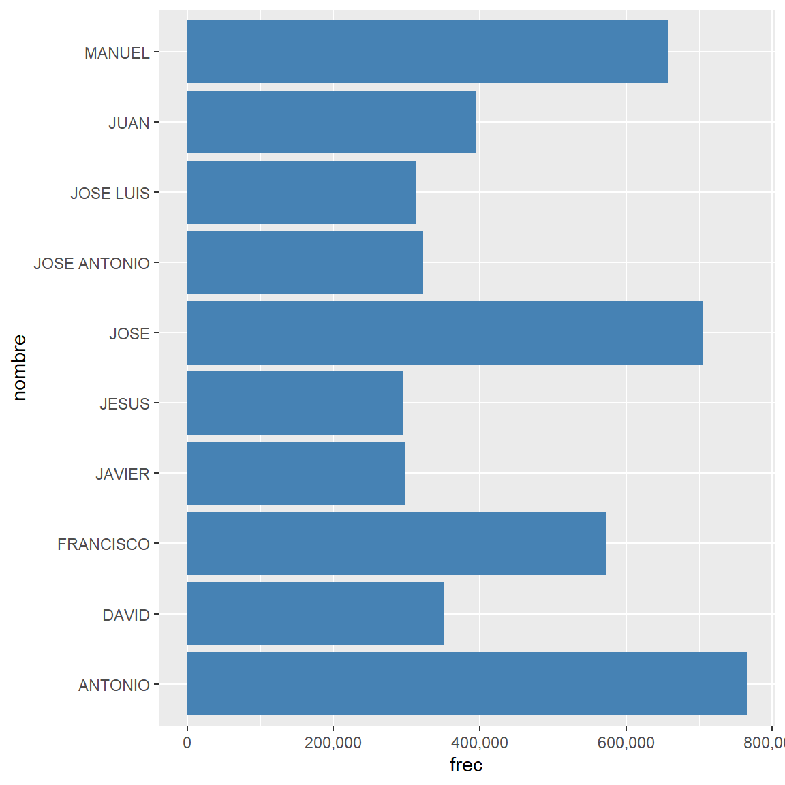
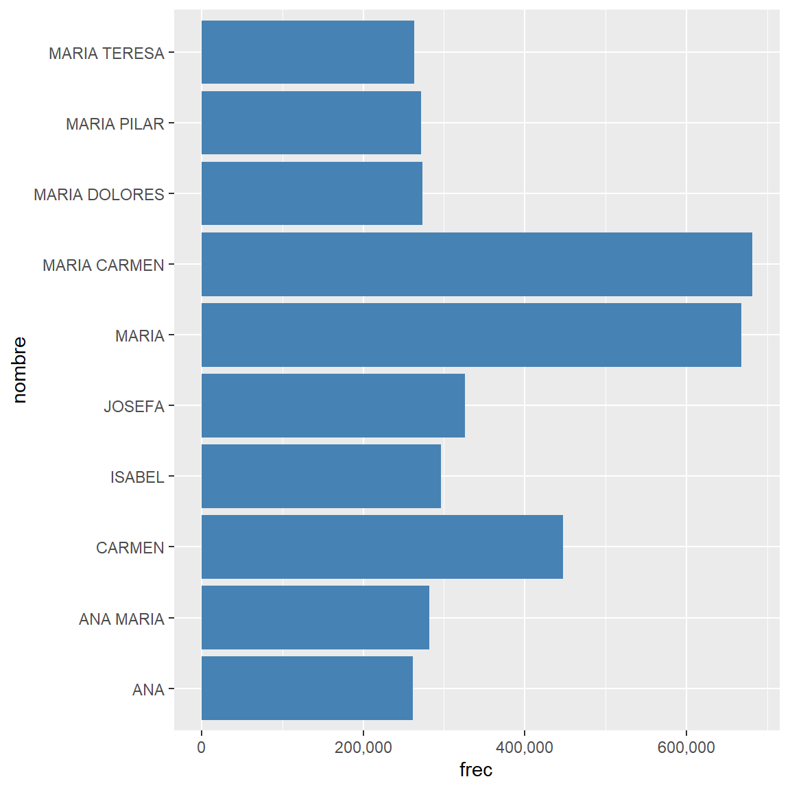
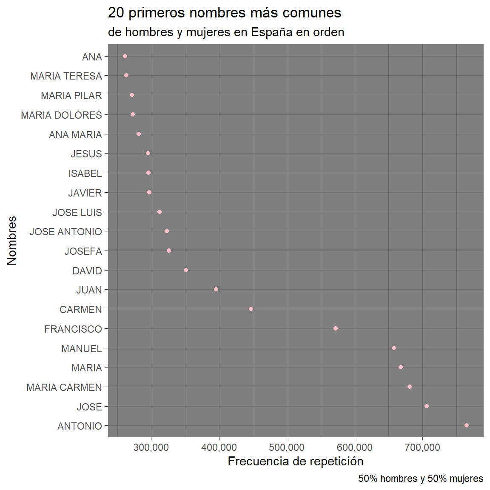

Analizaremos los diferentes nombres de hombres y mujeres en España teniendo en cuenta la edad media y la frecuencia.
trabajo BigData individual
Autor/a
Leire Montón (leimon2@alumni.uv.es)
Fecha de publicación
13 de enero de 2023
Introducción
En España hay gran diversidad de nombres de todas las nacionalidades, tanto para hombres como para mujeres. Aquí analizo cuales son los más comunes. También los nombres que por término medio se utilizan más en adultos así como en los más pequeños de la familia.
Datos
Descargo los datos de los hombres y las mujeres.
Nombres más comunes de hombres
Los 10 nombres con mayor frecuencia entre españoles

Nombres más comunes de mujeres
Los 10 nombres con mayor frecuencia entre las españolas

Nombres adultos
Vamos a ver qué nombre de mujer y de hombre son los que tienen una mayor edad de media y expresaremos esta información en una tabla. En hombres hay dos nombres que tienen la máxima edad de media.
Nombres con mayor edad de media
En España
Nombre
Edad media
ALBERT EDWARD
74.8
ALBERT WILLIAM
74.8
CANUTA
80.9
Nombres más comunes por orden

Nombres de infantiles
Nombres con una edad de media menor de los 3 años
Nombres más comunes entre los menores de 3 años
Para hombres y mujeres en España
Media de edad
Nombre
2.9
MALAK
2.6
NAIALA
2.9
ALAE
2.9
ISRAE
2.5
YUMALAY
2.7
JARE
2.3
YUMALAI
2.7
AAYA
2.5
ARHANE
1.9
RIHANNA
2.4
ABRAR
2.5
NEKAL
2.5
SURI
2.7
MAYSAA
2.5
MILEY
2.2
IZEL
2.8
ROEYA
2.8
YI XIN
2.5
SARA ANDREEA
3.0
TASSNIM
2.6
YUSRAA
2.2
RAYAN
2.9
NEIZAN
2.6
EIDAN
2.1
MOHAMED RAYAN
1.4
RAYYAN
2.8
EIZAN
1.5
HAOXUAN
2.5
ZAREK
2.5
ZI HAO
2.1
ANIR
2.9
ERIC ANDREI
2.5
EYDAN
Conclusión
Este análisis no permite extraer conclusiones detalladas, pero hemos podido mover los datos y conocer información a cerca de los diferentes nombres que existen en España.
Ejecutar el código
---title: "Nombres de hombres y mujeres en España"description: | Analizaremos los diferentes nombres de hombres y mujeres en España teniendo en cuenta la edad media y la frecuencia. author:- name: Leire Montón (leimon2@alumni.uv.es)date: 2023-01-13 categories: [trabajo BigData individual] image: "foto_nombres.jpg"title-block-banner: true #- {true, false, "green","#AA0000"}title-block-banner-color: "white" #-"#FFFFFF" toc: truetoc-location: lefttoc-depth: 3smooth-scroll: trueformat: html: #backgroundcolor: "pink" #embed-resources: true link-external-newwindow: true #css: ./assets/my_css_file.css #- CUIDADO!!!!code-tools: truecode-link: true---# IntroducciónEn España hay gran diversidad de nombres de todas las nacionalidades, tanto para hombres como para mujeres. Aquí analizo cuales son los más comunes. También los nombres que por término medio se utilizan más en adultos así como en los más pequeños de la familia.```{r, setup, include=FALSE, echo=FALSE}knitr::opts_chunk$set(comment ='', fig.width =6, fig.height =6)```# DatosDescargo los datos de los hombres y las mujeres.```{r, include=FALSE, warning=FALSE}#- Descargamos la tablas de nombres de mujeres y de hombremy_url <-"https://raw.githubusercontent.com/marcboquet/spanish-names/master/hombres.csv"curl::curl_download(my_url, "./datos/hombres.csv")my_url2 <-"https://raw.githubusercontent.com/marcboquet/spanish-names/master/mujeres.csv"curl::curl_download(my_url2, "./datos/mujeres.csv")# Cagar los datosdfh <- rio::import("./datos/hombres.csv") #-str(dfh)dfm <- rio::import("./datos/mujeres.csv") #-str(dfm)library(tidyverse)library(ggplot2)library(scales)library(plotly)library(sf)library(gt)```# Nombres más comunes de hombres**Los 10 nombres con mayor frecuencia entre españoles**```{r, echo=FALSE, message=FALSE, warning=FALSE}dfhrep <- dfh %>%group_by(nombre, edad_media) %>%summarise(frec =sum(frec)) %>%ungroup() %>%select(nombre, frec, edad_media) %>%slice_max(frec, n =10)p1 <-ggplot(dfhrep, aes(y = nombre, x = frec)) +geom_col(fill ="steelblue") +scale_x_continuous(labels =label_comma())p1```# Nombres más comunes de mujeres**Los 10 nombres con mayor frecuencia entre las españolas**```{r, echo=FALSE, message=FALSE, warning=FALSE}dfmrep <- dfm %>%group_by(nombre, edad_media) %>%summarise(frec =sum(frec)) %>%ungroup() %>%select(nombre, frec, edad_media) %>%slice_max(frec, n =10)p2 <-ggplot(dfmrep, aes(y = nombre, x = frec)) +geom_col(fill ="steelblue") +scale_x_continuous(labels =label_comma())p2```# Nombres adultosVamos a ver qué nombre de mujer y de hombre son los que tienen una mayor edad de media y expresaremos esta información en una tabla. En hombres hay dos nombres que tienen la máxima edad de media.```{r, echo=FALSE, message=FALSE, warning=FALSE}edadh <- dfh %>%group_by(nombre) %>%select(nombre, edad_media) %>%ungroup() %>%top_n(1, edad_media) edadm <- dfm %>%group_by(nombre) %>%select(nombre, edad_media) %>%ungroup() %>%top_n(1, edad_media) max_edad_media <-bind_rows(edadh, edadm)t_1 <- max_edad_media %>%gt()t_1 <- gt ::gt( max_edad_media )t_1 %>%tab_header( title =" Nombres con mayor edad de media" , subtitle =md ( " **En España** " )) %>%cols_label( nombre =" Nombre " , edad_media =" Edad media" ) %>%opt_stylize(style =2, color ="pink")```# Nombres más comunes por orden```{r, echo = FALSE,message = FALSE, warning = FALSE}comunes_totales <-bind_rows(dfhrep, dfmrep) p <-ggplot(comunes_totales) +aes(y =reorder(nombre, desc(frec)), x = frec) +geom_point(mapping =NULL, stat ="identity", colour ="pink") +labs(title ="20 primeros nombres más comunes ") +labs(subtitle ="de hombres y mujeres en España en orden") +labs(caption ="50% hombres y 50% mujeres") +labs(x ="Frecuencia de repetición") +labs(y ="Nombres") +scale_x_continuous(labels =label_comma()) +theme_dark() p```# Nombres de infantiles**Nombres con una edad de media menor de los 3 años**```{r, echo = FALSE,message = FALSE, warning = FALSE}edadm_menor3 <- dfm %>%group_by(nombre) %>%select(nombre, edad_media) %>%ungroup() %>%filter(edad_media <=3)edadh_menor3 <- dfh %>%group_by(nombre) %>%select(nombre, edad_media) %>%ungroup() %>%filter(edad_media <=3)menores_3 <-bind_rows(edadm_menor3, edadh_menor3) t_2 <- menores_3 %>%gt()t_2 <- gt::gt(menores_3)t_2 %>%tab_header(title ="Nombres más comunes entre los menores de 3 años", subtitle =md ("**Para hombres y mujeres en España**")) %>%cols_label( nombre =" Nombre " , edad_media ="Media de edad" ) %>%cols_move(columns =c(nombre), after =c(edad_media)) %>%opt_stylize(style =1, color ="red")```# ConclusiónEste análisis no permite extraer conclusiones detalladas, pero hemos podido mover los datos y conocer información a cerca de los diferentes nombres que existen en España.